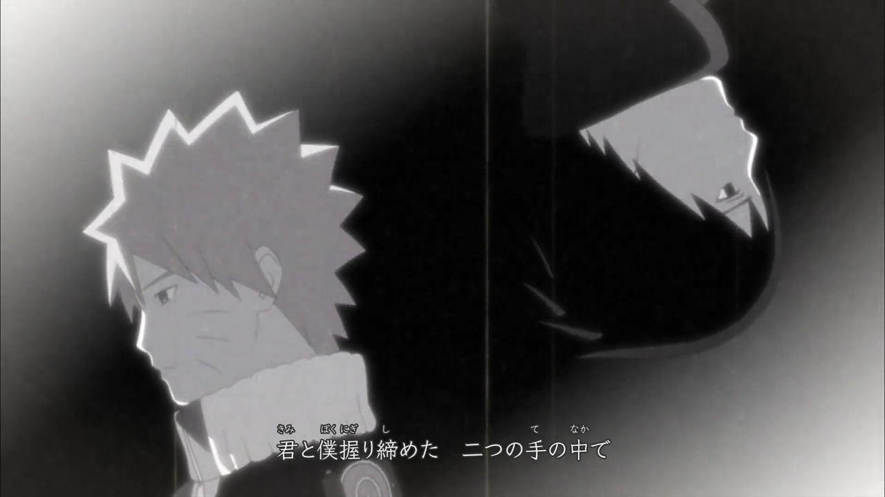
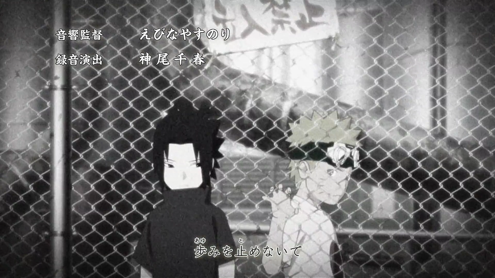
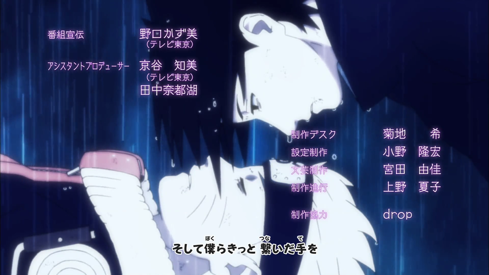
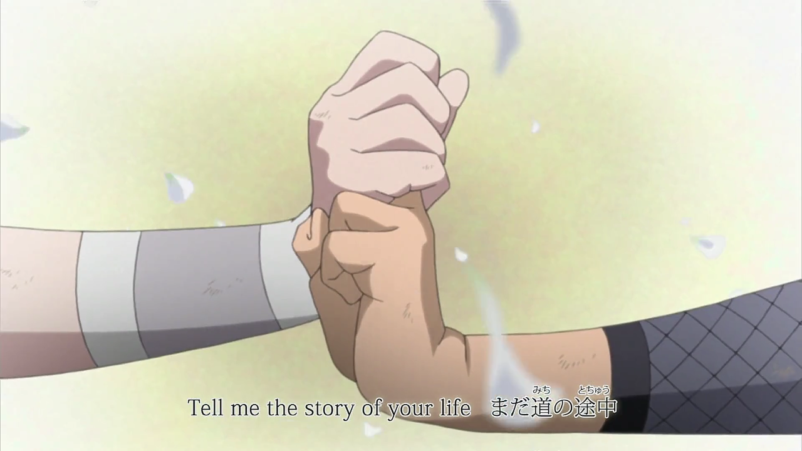
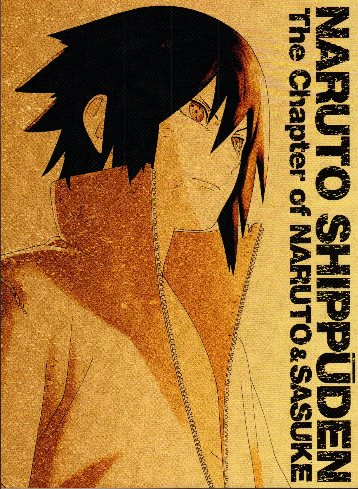
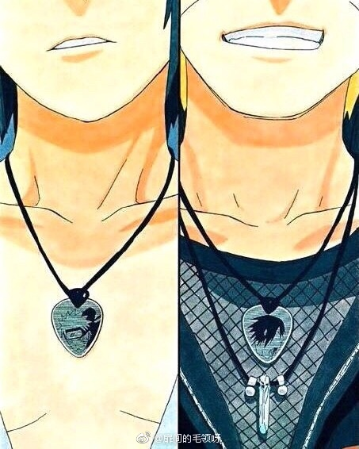

❤鳴人 x 佐助❤
漩渦鳴人 x 宇智波佐助
(cv:竹內順子)(cv:杉山紀彰)
屬性：金髮藍瞳忠犬暖攻，中二面癱傲嬌受
互動關係：兩人從小受到眾人的排擠，其實互相得非常在意對方，想互相了解，但是卻無法坦率。


之後一起被分到由卡卡西帶領的第七班，常常一起出任務，許多時候兩人默契非常契合，有困難的時候會奮不顧身的去拯救對方。非常有愛。


兩人的關係非常的密切，互相為對方做了許多事，滿滿的都是在意、擔心、關心、憧憬......說是朋友總覺得還有些不夠，應該說是靈魂伴侶。


bilibili葛雷松的鳴佐視頻收藏夾